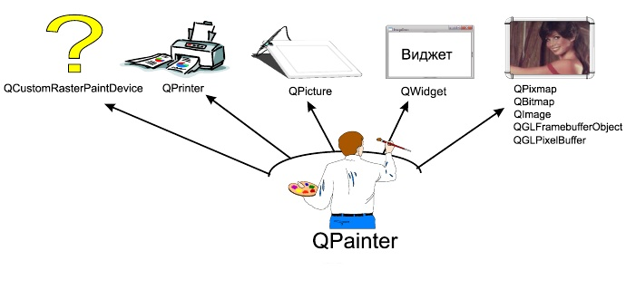
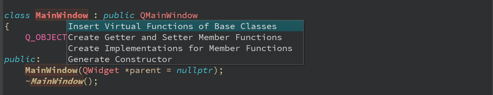
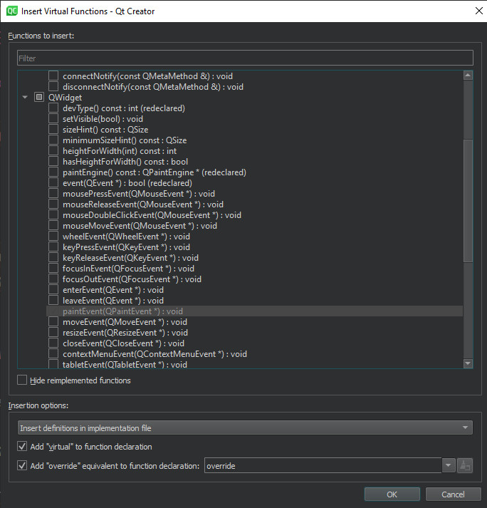
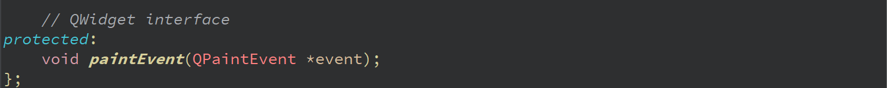
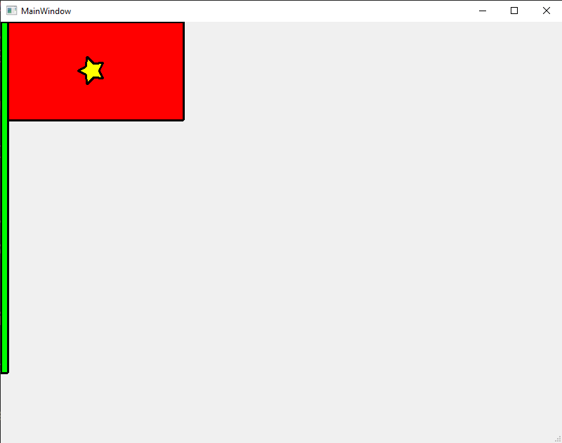

Lớp QPainter, được định nghĩa trong tệp tiêu đề Qpainter, là lớp thực thi các lệnh vẽ. Nó chứa rất nhiều phương thức để hiển thị đường thẳng, hình tròn, hình chữ nhật,...
Để bắt đầu vẽ lên cửa sổ chính chúng ta thêm trình xử lí sự kiện painEvent bằng cách ấn tổ hợp phím Alt + Enter như sau:
Chọn painEvent(QpainterEvent *):
Một phương thức được thêm tự động như sau:
Trong phương thức vừa tạo chúng ta bắt đầu vẽ:
void MainWindow::paintEvent(QPaintEvent *event)
{
QPainter painter;
painter.begin(this);
// Lệnh vẽ
painter.end();
}
Brush được sử dụng để tô màu liên tục lên như như hình tròn, hình elip và đa giác.Brush được thiết lập bởi hai tham số - màu sắc và mẫu tô. Bạn có thể đặt bút vẽ bằng phương thức QPainter::setBrush(), truyền cho nó một đối tượng của lớp QBrush hoặc một trong các mẫu được xác định trước được liệt kê trong bảng.
Bút vẽ là nền tảng để lập trình đồ họa bằng thư viện Qt. Nếu không có chúng, sẽ không thể hiển thị dù chỉ một điểm trên màn hình.
Các dòng sau thiết lập một brush màu đỏ với các nét ngang:
Hiển thị hình dạng là một nhiệm vụ đơn giản, vì nó không yêu cầu tính toán vị trí của mỗi pixel đầu ra, vì đã có một số phương pháp để hiển thị hầu hết tất cả các hình dạng hình học. Ví dụ: bằng cách gọi phương thức drawRect (), bạn có thể vẽ một hình chữ nhật.
Trước khi bạn bắt đầu vẽ, điều quan trọng là phải hiểu triết lý đằng sau tọa độ pixel. Nó nằm ở thực tế là trung tâm của pixel nằm ở giữa của nó. Tức là pixel nằm ở góc trên bên trái sẽ có tọa độ (0,5, 0,5). Nếu chúng ta cố gắng vẽ một pixel có tọa độ (0, 0), thì QPainter sẽ tự động thêm 0,5 vào chúng và kết quả sẽ là (0,5, 0,5).
Chỉ có bút được sử dụng để hiển thị điểm. Danh sách vẽ tám chấm trên màn hình.
Sử dụng phương thức drawPoin() :
Để vẽ một đoạn thẳng từ điểm này đến điểm khác, hãy sử dụng phương thức drawLine (), được truyền tọa độ của các điểm QPointF bắt đầu (x1, y1) và kết thúc (x2, y2).
Phương thức drawPolyLine() vẽ một đường thẳng nối các điểm được truyền trong tham số đầu tiên. Tham số thứ hai chỉ định số điểm được kết nối (tức là số phần tử của mảng). Điểm đầu tiên và điểm cuối cùng không kết nối.
Bài tập: Hãy vẽ là cờ Việt Nam như sau:
